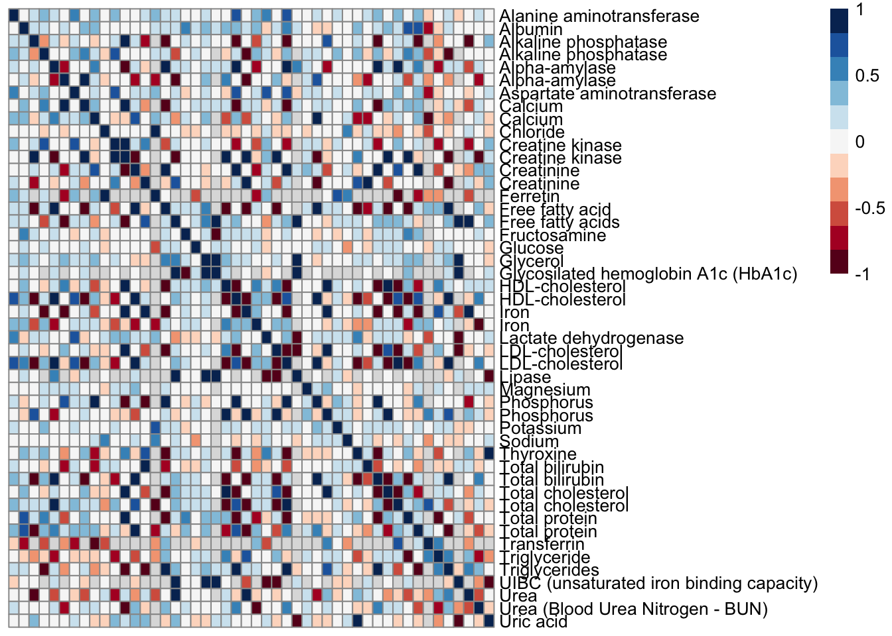

IMPC EDA
Bin Li
2020-04-03
Last updated: 2020-04-03
Checks: 7 0
Knit directory: Bin_Project/
This reproducible R Markdown analysis was created with workflowr (version 1.4.0). The Checks tab describes the reproducibility checks that were applied when the results were created. The Past versions tab lists the development history.
Great! Since the R Markdown file has been committed to the Git repository, you know the exact version of the code that produced these results.
Great job! The global environment was empty. Objects defined in the global environment can affect the analysis in your R Markdown file in unknown ways. For reproduciblity it’s best to always run the code in an empty environment.
The command set.seed(20200325) was run prior to running the code in the R Markdown file. Setting a seed ensures that any results that rely on randomness, e.g. subsampling or permutations, are reproducible.
Great job! Recording the operating system, R version, and package versions is critical for reproducibility.
Nice! There were no cached chunks for this analysis, so you can be confident that you successfully produced the results during this run.
Great job! Using relative paths to the files within your workflowr project makes it easier to run your code on other machines.
Great! You are using Git for version control. Tracking code development and connecting the code version to the results is critical for reproducibility. The version displayed above was the version of the Git repository at the time these results were generated.
Note that you need to be careful to ensure that all relevant files for the analysis have been committed to Git prior to generating the results (you can use wflow_publish or wflow_git_commit). workflowr only checks the R Markdown file, but you know if there are other scripts or data files that it depends on. Below is the status of the Git repository when the results were generated:
Ignored files:
Ignored: .Rhistory
Ignored: .Rproj.user/
Ignored: analysis/figure/
Note that any generated files, e.g. HTML, png, CSS, etc., are not included in this status report because it is ok for generated content to have uncommitted changes.
These are the previous versions of the R Markdown and HTML files. If you’ve configured a remote Git repository (see ?wflow_git_remote), click on the hyperlinks in the table below to view them.
| File | Version | Author | Date | Message |
|---|---|---|---|---|
| Rmd | 1ca98c7 | BinLi8256 | 2020-04-04 | modified |
| Rmd | d588cff | BinLi8256 | 2020-04-04 | Modified |
| Rmd | cd6c6c9 | BinLi8256 | 2020-04-03 | Week0402 |
| html | 98bda57 | dleelab | 2020-03-25 | c |
| Rmd | a839cf9 | dleelab | 2020-03-25 | c |
| Rmd | c77574b | dleelab | 2020-03-25 | created |
library(data.table)
library(dplyr)
Attaching package: 'dplyr'The following objects are masked from 'package:data.table':
between, first, lastThe following objects are masked from 'package:stats':
filter, lagThe following objects are masked from 'package:base':
intersect, setdiff, setequal, unionlibrary(reshape2)
Attaching package: 'reshape2'The following objects are masked from 'package:data.table':
dcast, meltlibrary(tidyr)
Attaching package: 'tidyr'The following object is masked from 'package:reshape2':
smithslibrary(ggplot2)
library(pheatmap)
library(RColorBrewer)Read KOMPv10.1
KOMPv10.1.file = "~/box/Miami_IMPC/data/v10.1/IMPC_ALL_statistical_results.csv.gz"
KOMPv10.1 = fread(KOMPv10.1.file, header=TRUE, sep=",")Warning in require_bit64_if_needed(ans): Some columns are type 'integer64'
but package bit64 is not installed. Those columns will print as strange
looking floating point data. There is no need to reload the data. Simply
install.packages('bit64') to obtain the integer64 print method and print
the data again.head(KOMPv10.1, 10)Warning in require_bit64_if_needed(x): Some columns are type 'integer64'
but package bit64 is not installed. Those columns will print as strange
looking floating point data. There is no need to reload the data. Simply
install.packages('bit64') to obtain the integer64 print method and print
the data again. phenotyping_center intercept_estimate procedure_id
1: JAX 103.21688 39
2: JAX 190.58819 39
3: JAX 103.20215 39
4: JAX 190.41891 39
5: JAX 5.74237 39
6: JAX 103.23361 39
7: MRC Harwell NA 219
8: JAX 10.62649 39
9: JAX 190.53820 39
10: JAX 5.74775 39
mutant_biological_model_id rotated_residuals_test
1: 41239 0.029434348
2: 41239 0.059177607
3: 42832 0.029360493
4: 42832 0.073715244
5: 42710 0.184621933
6: 41850 0.015275688
7: 38131 NA
8: 41850 0.003004283
9: 42182 0.064101490
10: 42182 0.211267976
weight_effect_p_value male_mutant_count pipeline_stable_key
1: NA 9 12
2: NA 9 12
3: NA 8 12
4: NA 8 12
5: NA 7 12
6: NA 10 12
7: NA 10 1
8: NA 10 12
9: NA 8 12
10: NA 8 12
female_ko_effect_p_value pipeline_stable_id parameter_stable_key
1: NA JAX_001 1839
2: 0.58055337 JAX_001 1840
3: 0.01053712 JAX_001 1839
4: NA JAX_001 1840
5: NA JAX_001 1841
6: NA JAX_001 1839
7: NA ESLIM_001 117
8: NA JAX_001 1842
9: NA JAX_001 1840
10: NA JAX_001 1841
data_type parameter_stable_id interaction_significant
1: unidimensional IMPC_GRS_008_001 FALSE
2: unidimensional IMPC_GRS_009_001 TRUE
3: unidimensional IMPC_GRS_008_001 TRUE
4: unidimensional IMPC_GRS_009_001 FALSE
5: unidimensional IMPC_GRS_010_001 FALSE
6: unidimensional IMPC_GRS_008_001 FALSE
7: categorical ESLIM_001_001_117 NA
8: unidimensional IMPC_GRS_011_001 FALSE
9: unidimensional IMPC_GRS_009_001 FALSE
10: unidimensional IMPC_GRS_010_001 FALSE
strain_accession_id control_selection_method
1: MGI:3056279 baseline_all
2: MGI:3056279 baseline_all
3: MGI:3056279 baseline_all
4: MGI:3056279 baseline_all
5: MGI:3056279 baseline_all
6: MGI:3056279 baseline_all
7: MGI:3028467 baseline_all
8: MGI:3056279 baseline_all
9: MGI:3056279 baseline_all
10: MGI:3056279 baseline_all
parameter_name
1: Forelimb grip strength measurement mean
2: Forelimb and hindlimb grip strength measurement mean
3: Forelimb grip strength measurement mean
4: Forelimb and hindlimb grip strength measurement mean
5: Forelimb grip strength normalised against body weight
6: Forelimb grip strength measurement mean
7: eye size
8: Forelimb and hindlimb grip strength normalised against body weight
9: Forelimb and hindlimb grip strength measurement mean
10: Forelimb grip strength normalised against body weight
allele_name
1: targeted mutation 1b, Mouse Biology Program, UCDavis
2: targeted mutation 1b, Mouse Biology Program, UCDavis
3: targeted mutation 1.1, Velocigene
4: targeted mutation 1.1, Velocigene
5: targeted mutation 1.1, Velocigene
6: targeted mutation 1.1, Velocigene
7: targeted mutation 1.1, Matthew Freeman
8: targeted mutation 1.1, Velocigene
9: targeted mutation 1b, Wellcome Trust Sanger Institute
10: targeted mutation 1b, Wellcome Trust Sanger Institute
phenotyping_center_id weight_effect_stderr_estimate
1: 6 NA
2: 6 NA
3: 6 NA
4: 6 NA
5: 6 NA
6: 6 NA
7: 7 NA
8: 6 NA
9: 6 NA
10: 6 NA
weight_effect_parameter_estimate procedure_stable_id status
1: NA IMPC_GRS_001 Success
2: NA IMPC_GRS_001 Success
3: NA IMPC_GRS_001 Success
4: NA IMPC_GRS_001 Success
5: NA IMPC_GRS_001 Success
6: NA IMPC_GRS_001 Success
7: NA ESLIM_001_001 Success
8: NA IMPC_GRS_001 Success
9: NA IMPC_GRS_001 Success
10: NA IMPC_GRS_001 Success
sex_effect_parameter_estimate female_ko_effect_stderr_estimate
1: 4.8968776 NA
2: 5.2906810 13.027953
3: 4.8708808 5.679134
4: 5.3397060 NA
5: -0.8288958 NA
6: 4.8084892 NA
7: NA NA
8: -1.7398102 NA
9: 5.4206977 NA
10: -0.8321467 NA
female_percentage_change group_2_residuals_normality_test
1: 9.79394924961884% 0.20345158
2: -3.69832850634811% 0.83877297
3: -13.6962846440876% 0.43741173
4: -0.803737025231929% 0.83871762
5: 14.8321618038859% 0.01808893
6: 14.0037794965668% 0.64146842
7: NA
8: 22.2171707180418% 0.20439866
9: 6.24560230270407% 0.67295563
10: 2.74814524194353% 0.52069812
marker_accession_id mp_term_name
1: MGI:1917511 increased grip strength
2: MGI:1917511
3: MGI:3041226
4: MGI:3041226 decreased grip strength
5: MGI:88492 increased grip strength
6: MGI:103077 increased grip strength
7: MGI:1924117 macrophthalmia
8: MGI:103077 increased grip strength
9: MGI:104749 increased grip strength
10: MGI:104749 increased grip strength
group_1_residuals_normality_test genotype_effect_p_value
1: 0.012378466 1.999031e-02
2: 0.007196066 NA
3: 0.009630388 NA
4: 0.005427699 8.113825e-01
5: 0.236674490 3.886782e-03
6: 0.013037376 2.902588e-02
7: NA NA
8: 0.016299262 3.099207e-07
9: 0.006514335 1.107533e-01
10: 0.243429087 5.718976e-01
dependent_variable resource_name project_id procedure_name
1: IMPC_GRS_008_001 IMPC 4 Grip Strength
2: IMPC_GRS_009_001 IMPC 4 Grip Strength
3: IMPC_GRS_008_001 IMPC 4 Grip Strength
4: IMPC_GRS_009_001 IMPC 4 Grip Strength
5: IMPC_GRS_010_001 IMPC 4 Grip Strength
6: IMPC_GRS_008_001 IMPC 4 Grip Strength
7: ESLIM_001_001_117 EuroPhenome 1 Dysmorphology
8: IMPC_GRS_011_001 IMPC 4 Grip Strength
9: IMPC_GRS_009_001 IMPC 4 Grip Strength
10: IMPC_GRS_010_001 IMPC 4 Grip Strength
doc_id top_level_mp_term_id allele_accession_id
1: IMPC_GRS_008_001_CONT_72140 MP:0005386 MGI:5565261
2: IMPC_GRS_009_001_CONT_72141 MGI:5565261
3: IMPC_GRS_008_001_CONT_72144 MGI:5565609
4: IMPC_GRS_009_001_CONT_72145 MP:0005386 MGI:5565609
5: IMPC_GRS_010_001_CONT_72158 MP:0005386 MGI:5544601
6: IMPC_GRS_008_001_CONT_72160 MP:0005386 MGI:5529499
7: ESLIM_001_001_117_CAT_20073 MP:0005391 MGI:5442518
8: IMPC_GRS_011_001_CONT_72163 MP:0005386 MGI:5529499
9: IMPC_GRS_009_001_CONT_72165 MP:0005386 MGI:5474774
10: IMPC_GRS_010_001_CONT_72166 MP:0005386 MGI:5474774
blups_test null_test_p_value p_value marker_symbol
1: 0.0022494910 1.989491e-02 1.989491e-02 Chp2
2: 0.5070658777 2.346711e-07 2.346711e-07 Chp2
3: 0.0014168098 2.642397e-03 2.642397e-03 Akip1
4: 0.4942903784 8.120440e-01 8.120440e-01 Akip1
5: 0.8668722326 3.868400e-03 3.868400e-03 Masp1
6: 0.0018615243 3.389173e-02 3.389173e-02 Stx3
7: NA NA 1.000000e+00 Rhbdd1
8: 0.0008265339 2.342615e-05 2.342615e-05 Stx3
9: 0.5055516161 1.106557e-01 1.106557e-01 Osm
10: 0.9053608998 5.709756e-01 5.709756e-01 Osm
control_biological_model_id pipeline_name sex
1: 44388 JAX Pipeline
2: 44388 JAX Pipeline
3: 44388 JAX Pipeline
4: 44388 JAX Pipeline
5: 44388 JAX Pipeline
6: 44388 JAX Pipeline
7: 37895 EUMODIC Pipeline 1 both
8: 44388 JAX Pipeline
9: 44388 JAX Pipeline
10: 44388 JAX Pipeline
interaction_effect_p_value colony_id project_name
1: 0.1090701855 JR25118 IMPC
2: 0.0008635991 JR25118 IMPC
3: 0.0006457276 JR25117 IMPC
4: 0.3019353651 JR25117 IMPC
5: 0.3882815847 JR24759 IMPC
6: 0.3369933856 JR24517 IMPC
7: NA Rhbdl4-/- EUMODIC
8: 0.3000965237 JR24517 IMPC
9: 0.1654549678 JR22338 IMPC
10: 0.6634685132 JR22338 IMPC
female_ko_parameter_estimate female_mutant_count organisation_id
1: NA 8 6
2: -7.199955 8 6
3: -14.537259 8 6
4: NA 8 6
5: NA 4 6
6: NA 8 6
7: NA 9 7
8: NA 8 6
9: NA 8 6
10: NA 8 6
external_db_id female_control_count
1: 22 1331
2: 22 1331
3: 22 1331
4: 22 1331
5: 22 1331
6: 22 1331
7: 12 199
8: 22 1331
9: 22 1331
10: 22 1331
intermediate_mp_term_id db_id
1: MP:0002066,MP:0004262,MP:0004924,MP:0001515 72140
2: 72141
3: 72144
4: MP:0002066,MP:0004262,MP:0004924,MP:0001515 72145
5: MP:0002066,MP:0004262,MP:0004924,MP:0001515 72158
6: MP:0002066,MP:0004262,MP:0004924,MP:0001515 72160
7: MP:0002092,MP:0002697 20073
8: MP:0002066,MP:0004262,MP:0004924,MP:0001515 72163
9: MP:0002066,MP:0004262,MP:0004924,MP:0001515 72165
10: MP:0002066,MP:0004262,MP:0004924,MP:0001515 72166
male_ko_effect_p_value top_level_mp_term_name
1: NA behavior/neurological phenotype
2: 3.949825e-08
3: 6.332226e-02
4: NA behavior/neurological phenotype
5: NA behavior/neurological phenotype
6: NA behavior/neurological phenotype
7: NA vision/eye phenotype
8: NA behavior/neurological phenotype
9: NA behavior/neurological phenotype
10: NA behavior/neurological phenotype
metadata_group sex_effect_stderr_estimate
1: 303bab31edbf3049c0948df8849ceeba 0.68059647
2: 303bab31edbf3049c0948df8849ceeba 1.03390484
3: 303bab31edbf3049c0948df8849ceeba 0.68100328
4: 303bab31edbf3049c0948df8849ceeba 1.02633467
5: 303bab31edbf3049c0948df8849ceeba 0.03480638
6: 303bab31edbf3049c0948df8849ceeba 0.68041904
7: d41d8cd98f00b204e9800998ecf8427e NA
8: 303bab31edbf3049c0948df8849ceeba 0.05317876
9: 303bab31edbf3049c0948df8849ceeba 1.02868471
10: 303bab31edbf3049c0948df8849ceeba 0.03477611
zygosity male_percentage_change sex_effect_p_value mp_term_id
1: heterozygote 9.79394924961884% 8.393658e-13 MP:0010052
2: heterozygote 22.4530305711687% 3.355810e-07
3: homozygote 9.926315213502% 1.137457e-12
4: homozygote -0.803737025231929% 2.136442e-07 MP:0010053
5: homozygote 14.8321618038859% 2.728602e-112 MP:0010052
6: heterozygote 14.0037794965668% 2.085646e-12 MP:0010052
7: homozygote NA MP:0001296
8: heterozygote 22.2171707180418% 2.173110e-193 MP:0010052
9: homozygote 6.24560230270407% 1.494063e-07 MP:0010052
10: homozygote 2.74814524194353% 2.914306e-113 MP:0010052
male_ko_effect_stderr_estimate additional_information
1: NA NA
2: 7.930902 NA
3: 5.671081 NA
4: NA NA
5: NA NA
6: NA NA
7: NA NA
8: NA NA
9: NA NA
10: NA NA
statistical_method
1: Mixed Model framework, linear mixed-effects model, equation withoutWeight
2: Mixed Model framework, linear mixed-effects model, equation withoutWeight
3: Mixed Model framework, linear mixed-effects model, equation withoutWeight
4: Mixed Model framework, linear mixed-effects model, equation withoutWeight
5: Mixed Model framework, linear mixed-effects model, equation withoutWeight
6: Mixed Model framework, linear mixed-effects model, equation withoutWeight
7: Fisher Exact Test framework
8: Mixed Model framework, linear mixed-effects model, equation withoutWeight
9: Mixed Model framework, linear mixed-effects model, equation withoutWeight
10: Mixed Model framework, linear mixed-effects model, equation withoutWeight
_version_ intercept_estimate_stderr_estimate male_control_count
1: 5.13186e-199 0.90008321 1333
2: 5.13186e-199 1.29909530 1333
3: 5.13186e-199 0.90157465 1333
4: 5.13186e-199 1.30089739 1333
5: 5.13186e-199 0.04616496 1332
6: 5.13186e-199 0.90226539 1333
7: 5.13186e-199 NA 155
8: 5.13186e-199 0.07363595 1332
9: 5.13186e-199 1.29681540 1333
10: 5.13186e-199 0.04612057 1332
intermediate_mp_term_name
1: abnormal motor capabilities/coordination/movement,abnormal physical strength,abnormal behavior,abnormal grip strength
2:
3:
4: abnormal motor capabilities/coordination/movement,abnormal physical strength,abnormal behavior,abnormal grip strength
5: abnormal motor capabilities/coordination/movement,abnormal physical strength,abnormal behavior,abnormal grip strength
6: abnormal motor capabilities/coordination/movement,abnormal physical strength,abnormal behavior,abnormal grip strength
7: abnormal eye morphology,abnormal eye size
8: abnormal motor capabilities/coordination/movement,abnormal physical strength,abnormal behavior,abnormal grip strength
9: abnormal motor capabilities/coordination/movement,abnormal physical strength,abnormal behavior,abnormal grip strength
10: abnormal motor capabilities/coordination/movement,abnormal physical strength,abnormal behavior,abnormal grip strength
strain_name classification_tag
1: C57BL/6NJ If phenotype is significant - both sexes equally
2: C57BL/6NJ If phenotype is significant - males only
3: C57BL/6NJ If phenotype is significant - females only
4: C57BL/6NJ If phenotype is significant - both sexes equally
5: C57BL/6NJ If phenotype is significant - both sexes equally
6: C57BL/6NJ If phenotype is significant - both sexes equally
7: C57BL/6J
8: C57BL/6NJ If phenotype is significant - both sexes equally
9: C57BL/6NJ If phenotype is significant - both sexes equally
10: C57BL/6NJ If phenotype is significant - both sexes equally
effect_size procedure_stable_key allele_symbol resource_id
1: NA 83 Chp2<tm1b(KOMP)Mbp> 22
2: NA 83 Chp2<tm1b(KOMP)Mbp> 22
3: NA 83 Akip1<tm1.1(KOMP)Vlcg> 22
4: NA 83 Akip1<tm1.1(KOMP)Vlcg> 22
5: NA 83 Masp1<tm1.1(KOMP)Vlcg> 22
6: NA 83 Stx3<tm1.1(KOMP)Vlcg> 22
7: 0 1 Rhbdd1<tm1.1Mfm> 12
8: NA 83 Stx3<tm1.1(KOMP)Vlcg> 22
9: NA 83 Osm<tm1b(KOMP)Wtsi> 22
10: NA 83 Osm<tm1b(KOMP)Wtsi> 22
group_2_genotype variance_significant pipeline_id group_1_genotype
1: JR25118 TRUE 5 +/+
2: JR25118 TRUE 5 +/+
3: JR25117 TRUE 5 +/+
4: JR25117 TRUE 5 +/+
5: JR24759 TRUE 5 +/+
6: JR24517 FALSE 5 +/+
7: NA 30
8: JR24517 FALSE 5 +/+
9: JR22338 TRUE 5 +/+
10: JR22338 TRUE 5 +/+
male_ko_parameter_estimate genotype_effect_parameter_estimate
1: NA 10.3954794
2: 43.71186 NA
3: 10.53581 NA
4: NA -1.5639651
5: NA 0.7958646
6: NA 14.8666313
7: NA NA
8: NA 2.1932407
9: NA 12.1541118
10: NA 0.1474642
categories parameter_id batch_significant
1: 1533 TRUE
2: 1534 TRUE
3: 1533 TRUE
4: 1534 TRUE
5: 1535 TRUE
6: 1533 TRUE
7: 8170 NA
8: 1536 TRUE
9: 1534 TRUE
10: 1535 TRUE
genotype_effect_stderr_estimate
1: 4.4651478
2: NA
3: NA
4: 6.5528332
5: 0.2753738
6: 6.8055356
7: NA
8: 0.4273378
9: 7.6180964
10: 0.2608418
resource_fullname
1: International Mouse Phenotyping Consortium
2: International Mouse Phenotyping Consortium
3: International Mouse Phenotyping Consortium
4: International Mouse Phenotyping Consortium
5: International Mouse Phenotyping Consortium
6: International Mouse Phenotyping Consortium
7: EuroPhenome
8: International Mouse Phenotyping Consortium
9: International Mouse Phenotyping Consortium
10: International Mouse Phenotyping ConsortiumSubset data and generate Z-score
clinical_chem = KOMPv10.1 %>%
select(procedure_name, parameter_name, zygosity, allele_symbol,
genotype_effect_parameter_estimate, genotype_effect_stderr_estimate,
genotype_effect_p_value, phenotyping_center, allele_name) %>%
filter(procedure_name == "Clinical Chemistry", zygosity == "homozygote") %>%
mutate(z_score = genotype_effect_parameter_estimate/genotype_effect_stderr_estimate,
gene_pheno = paste0(parameter_name, "_", allele_symbol))
head(clinical_chem) procedure_name parameter_name zygosity
1 Clinical Chemistry Albumin homozygote
2 Clinical Chemistry Total protein homozygote
3 Clinical Chemistry Alanine aminotransferase homozygote
4 Clinical Chemistry Total bilirubin homozygote
5 Clinical Chemistry Calcium homozygote
6 Clinical Chemistry HDL-cholesterol homozygote
allele_symbol genotype_effect_parameter_estimate
1 Abcc2<tm2b(KOMP)Wtsi> -0.146562338
2 Abcc2<tm2b(KOMP)Wtsi> -0.138876955
3 Abcc2<tm2b(KOMP)Wtsi> 7.778542407
4 Abcc2<tm2b(KOMP)Wtsi> 0.243142364
5 Abcc2<tm2b(KOMP)Wtsi> -0.006329937
6 Abcc2<tm2b(KOMP)Wtsi> 10.937832126
genotype_effect_stderr_estimate genotype_effect_p_value
1 0.30837835 6.346251e-01
2 0.44995517 7.576087e-01
3 4.15086599 6.101778e-02
4 0.02627860 3.674891e-20
5 0.09761637 9.483010e-01
6 3.39188752 1.272411e-03
phenotyping_center allele_name
1 MRC Harwell targeted mutation 2b, Wellcome Trust Sanger Institute
2 MRC Harwell targeted mutation 2b, Wellcome Trust Sanger Institute
3 MRC Harwell targeted mutation 2b, Wellcome Trust Sanger Institute
4 MRC Harwell targeted mutation 2b, Wellcome Trust Sanger Institute
5 MRC Harwell targeted mutation 2b, Wellcome Trust Sanger Institute
6 MRC Harwell targeted mutation 2b, Wellcome Trust Sanger Institute
z_score gene_pheno
1 -0.47526793 Albumin_Abcc2<tm2b(KOMP)Wtsi>
2 -0.30864620 Total protein_Abcc2<tm2b(KOMP)Wtsi>
3 1.87395652 Alanine aminotransferase_Abcc2<tm2b(KOMP)Wtsi>
4 9.25248391 Total bilirubin_Abcc2<tm2b(KOMP)Wtsi>
5 -0.06484504 Calcium_Abcc2<tm2b(KOMP)Wtsi>
6 3.22470367 HDL-cholesterol_Abcc2<tm2b(KOMP)Wtsi>z-matrix and heatmap
#select necessary for z-score matrix
matrix = clinical_chem %>%
select(allele_symbol, parameter_name, z_score)
head(matrix) allele_symbol parameter_name z_score
1 Abcc2<tm2b(KOMP)Wtsi> Albumin -0.47526793
2 Abcc2<tm2b(KOMP)Wtsi> Total protein -0.30864620
3 Abcc2<tm2b(KOMP)Wtsi> Alanine aminotransferase 1.87395652
4 Abcc2<tm2b(KOMP)Wtsi> Total bilirubin 9.25248391
5 Abcc2<tm2b(KOMP)Wtsi> Calcium -0.06484504
6 Abcc2<tm2b(KOMP)Wtsi> HDL-cholesterol 3.22470367long to wide
new_matrix = acast(matrix, allele_symbol ~ parameter_name, value.var = "z_score",
fun.aggregate = sum)
data_matrix = as.data.frame(new_matrix)
data_matrix[is.na(data_matrix)] = 0
head(data.matrix)
1 function (frame, rownames.force = NA)
2 {
3 if (!is.data.frame(frame))
4 return(as.matrix(frame))
5 d <- dim(frame)
6 rn <- if (rownames.force %in% FALSE) long_matrix = data_matrix %>%
gather(key = "parameter_name", value = "z_score", 1:48)
head(long_matrix) parameter_name z_score
1 Alanine aminotransferase 0.5056457
2 Alanine aminotransferase 0.0000000
3 Alanine aminotransferase -0.4883739
4 Alanine aminotransferase 1.5973520
5 Alanine aminotransferase 0.1523003
6 Alanine aminotransferase -0.9723771data = expand.grid(gene = rownames(data_matrix), pheno=colnames(data_matrix))
data$Z_score=long_matrix$z_score
head(data) gene pheno Z_score
1 1110017D15Rik<em1(IMPC)H> Alanine aminotransferase 0.5056457
2 1110032A03Rik<tm1.1(KOMP)Vlcg> Alanine aminotransferase 0.0000000
3 1110059G10Rik<tm1a(KOMP)Wtsi> Alanine aminotransferase -0.4883739
4 1500009L16Rik<em1(IMPC)Mbp> Alanine aminotransferase 1.5973520
5 1500011B03Rik<tm2(KOMP)Wtsi> Alanine aminotransferase 0.1523003
6 1500015O10Rik<tm1b(EUCOMM)Hmgu> Alanine aminotransferase -0.9723771#ggplot(data = data, aes(x= gene, y = pheno, fill =Z_score)) +
#geom_tile() +
#scale_fill_gradient(low="white",high="blue") +
#theme(axis.text.x = element_text(angle = 90))
#-------------------------------------------------------------------------------------------------
# long to wide (Small)
new_matrix_small = acast(matrix[1:500, ], allele_symbol ~ parameter_name, value.var = "z_score")
data_matrix_small = as.data.frame(new_matrix_small)
data_matrix_small[is.na(data_matrix_small)] = 0
long_matrix_small = data_matrix_small %>%
gather(key = "parameter_name", value = "z_score", 1:36)
data_small = expand.grid(gene = rownames(data_matrix_small), pheno=colnames(data_matrix_small))
data_small$Z_score=long_matrix_small$z_score
ggplot(data = data_small, aes(x= gene, y = pheno, fill =Z_score)) +
geom_tile() +
scale_fill_gradient(low="white",high="blue") +
theme(axis.text.x = element_text(angle = 90))
| Version | Author | Date |
|---|---|---|
| 98bda57 | dleelab | 2020-03-25 |
#——————- Week 04/03 ——————–#
- EDA
- How many gene-phenotypes pairs are measured?
nrow(clinical_chem)[1] 62478- How many phenotypes are tested?
chem_pheno = length(unique(clinical_chem$parameter_name))
chem_pheno[1] 48- How many genes are tested?
chem_gene = length(unique(clinical_chem$allele_symbol))
chem_gene[1] 2743- How many research institutions are participating in this project?
#phenotyping center
chem_ins = length(unique(clinical_chem$phenotyping_center))
chem_ins[1] 12#allele(gene) name
chem_allel = length(unique(clinical_chem$allele_name))
chem_allel[1] 255- What kind of phenotypes are tested in each research institution?
clinical_chem %>%
mutate(phenotyping_center = as.factor(phenotyping_center)) %>%
select(phenotyping_center, parameter_name) %>%
group_by(phenotyping_center, parameter_name) %>%
summarize(test=n())# A tibble: 279 x 3
# Groups: phenotyping_center [12]
phenotyping_center parameter_name test
<fct> <chr> <int>
1 BCM Alanine aminotransferase 100
2 BCM Albumin 101
3 BCM Alkaline phosphatase 96
4 BCM Aspartate aminotransferase 100
5 BCM Calcium 99
6 BCM Chloride 85
7 BCM Creatine kinase 3
8 BCM Creatinine 82
9 BCM Glucose 98
10 BCM HDL-cholesterol 14
# … with 269 more rows- How many gene-phenotype tests are sigificant?
clinical_chem %>%
filter(genotype_effect_p_value < 0.05) %>%
summarise(n()) n()
1 10020clinical_chem %>%
select(allele_symbol, parameter_name, genotype_effect_p_value) %>%
group_by(allele_symbol, parameter_name) %>%
filter(genotype_effect_p_value < 0.05) %>%
summarise(n())# A tibble: 8,751 x 3
# Groups: allele_symbol [2,388]
allele_symbol parameter_name `n()`
<chr> <chr> <int>
1 1110017D15Rik<em1(IMPC)H> Fructosamine 1
2 1110017D15Rik<em1(IMPC)H> Total bilirubin 1
3 1110032A03Rik<tm1.1(KOMP)Vlcg> Glucose 1
4 1110059G10Rik<tm1a(KOMP)Wtsi> Sodium 1
5 1500009L16Rik<em1(IMPC)Mbp> Albumin 1
6 1500009L16Rik<em1(IMPC)Mbp> Aspartate aminotransferase 1
7 1500009L16Rik<em1(IMPC)Mbp> Calcium 1
8 1500009L16Rik<em1(IMPC)Mbp> Creatinine 1
9 1500009L16Rik<em1(IMPC)Mbp> Glucose 1
10 1500009L16Rik<em1(IMPC)Mbp> Total protein 1
# … with 8,741 more rows- Correlation matrix and heatmap
zscore = clinical_chem %>%
select(allele_symbol, parameter_name, z_score)
head(zscore) allele_symbol parameter_name z_score
1 Abcc2<tm2b(KOMP)Wtsi> Albumin -0.47526793
2 Abcc2<tm2b(KOMP)Wtsi> Total protein -0.30864620
3 Abcc2<tm2b(KOMP)Wtsi> Alanine aminotransferase 1.87395652
4 Abcc2<tm2b(KOMP)Wtsi> Total bilirubin 9.25248391
5 Abcc2<tm2b(KOMP)Wtsi> Calcium -0.06484504
6 Abcc2<tm2b(KOMP)Wtsi> HDL-cholesterol 3.22470367zmat = dcast(zscore, allele_symbol ~ parameter_name, value.var = "z_score",
fun.aggregate = mean)
head(zmat) allele_symbol Alanine aminotransferase Albumin
1 1110017D15Rik<em1(IMPC)H> 0.5056457 NA
2 1110032A03Rik<tm1.1(KOMP)Vlcg> NA -1.202882
3 1110059G10Rik<tm1a(KOMP)Wtsi> -0.4883739 NA
4 1500009L16Rik<em1(IMPC)Mbp> 1.5973520 4.144305
5 1500011B03Rik<tm2(KOMP)Wtsi> 0.1523003 -1.458014
6 1500015O10Rik<tm1b(EUCOMM)Hmgu> -0.9723771 -2.613166
Alkaline phosphatase Alkaline phosphatase Alpha-amylase
1 NA NaN -0.4594304
2 -0.47325935 NaN NaN
3 NA NaN 1.2371198
4 NA NaN NaN
5 0.07351551 NaN NA
6 -2.63997847 NaN NaN
Alpha-amylase Aspartate aminotransferase Calcium Calcium
1 NaN -0.3159037 0.5969713 NaN
2 NaN NA -1.1201982 NaN
3 NaN -1.6624565 0.6799790 NaN
4 NaN 4.4996310 3.4501176 NaN
5 NaN -1.2766408 4.2713259 NaN
6 NaN -0.1146575 NA NaN
Chloride Creatine kinase Creatine kinase Creatinine Creatinine
1 NaN NA NaN -1.402300 NaN
2 NaN NaN NaN -1.076261 NaN
3 0.5696546 -0.5458545 NaN NA NaN
4 NaN NaN NaN 3.844461 NaN
5 -2.3562278 -1.1644556 NaN -1.453293 NaN
6 NaN NaN NaN -1.715891 NaN
Ferretin Free fatty acid Free fatty acids Fructosamine Glucose
1 NaN NaN NaN 2.5587864 -0.3006703
2 NaN NaN NaN NaN -2.2715720
3 NaN NaN 0.9094932 0.5603323 NA
4 NaN NaN NaN NaN 1.9737218
5 NaN NaN 0.9389931 -0.3522367 1.4371385
6 NaN NaN NaN NaN -2.1763585
Glycerol Glycosilated hemoglobin A1c (HbA1c) HDL-cholesterol
1 NaN NaN NA
2 NaN NaN -1.430274
3 NA NaN NA
4 NaN NaN NaN
5 0.08989264 NaN 1.645414
6 NaN NaN 1.474749
HDL-cholesterol Iron Iron Lactate dehydrogenase
1 NaN -1.4758593 NaN NaN
2 NaN NaN NaN NaN
3 NaN 1.2986838 NaN NaN
4 NaN NaN NaN NaN
5 NaN 0.1874328 NaN NaN
6 NaN NaN NaN NaN
LDL-cholesterol LDL-cholesterol Lipase Magnesium Phosphorus
1 NaN NaN NaN NaN 0.132306
2 NaN NaN NaN NaN -0.924114
3 NA NaN NaN NA 1.860155
4 NaN NaN NaN NaN 1.558514
5 NA NaN NaN NA 0.515877
6 NaN NaN NaN NaN -1.662248
Phosphorus Potassium Sodium Thyroxine Total bilirubin
1 NaN -1.47918788 NaN NaN -2.0981083
2 NaN NaN NaN NaN -0.9086358
3 NaN 0.98688944 2.7262411 NaN 0.5715556
4 NaN NaN NaN NaN 0.8997470
5 NaN 0.04322786 -0.8243874 0.9231261 NA
6 NaN NaN NaN NaN 0.3982442
Total bilirubin Total cholesterol Total cholesterol Total protein
1 NaN NA NaN NA
2 NaN -0.6251060 NaN -1.27265770
3 NaN -0.1675694 NaN -0.36925708
4 NaN 0.4444792 NaN 2.33200530
5 NaN 0.9474098 NaN -0.07861684
6 NaN 1.9365274 NaN -1.02487811
Total protein Transferrin Triglyceride Triglycerides
1 NaN NaN NaN -0.6996832
2 NaN NaN NaN -1.0253320
3 NaN NaN NaN 1.1696380
4 NaN NaN NaN 1.9442100
5 NaN NaN NaN 2.1249667
6 NaN NaN NaN NA
UIBC (unsaturated iron binding capacity) Urea
1 NaN NaN
2 NaN NaN
3 NaN NaN
4 NaN NaN
5 NaN NaN
6 NaN NaN
Urea (Blood Urea Nitrogen - BUN) Uric acid
1 1.5687727 NaN
2 -1.6283711 NaN
3 0.3195218 NaN
4 0.9710973 NaN
5 -0.4628579 NaN
6 -1.5968179 NaNzcor = cor(zmat[,-1],use="pairwise.complete.obs")
pheatmap(zcor, cluster_rows = F, cluster_cols=F, show_colnames=F, col=brewer.pal(n=11,name="RdBu"))
sessionInfo()R version 3.6.3 (2020-02-29)
Platform: x86_64-apple-darwin15.6.0 (64-bit)
Running under: macOS Catalina 10.15.3
Matrix products: default
BLAS: /Library/Frameworks/R.framework/Versions/3.6/Resources/lib/libRblas.0.dylib
LAPACK: /Library/Frameworks/R.framework/Versions/3.6/Resources/lib/libRlapack.dylib
locale:
[1] en_US.UTF-8/en_US.UTF-8/en_US.UTF-8/C/en_US.UTF-8/en_US.UTF-8
attached base packages:
[1] stats graphics grDevices utils datasets methods base
other attached packages:
[1] RColorBrewer_1.1-2 pheatmap_1.0.12 ggplot2_3.2.1
[4] tidyr_0.8.3 reshape2_1.4.3 dplyr_0.8.3
[7] data.table_1.12.8
loaded via a namespace (and not attached):
[1] Rcpp_1.0.2 pillar_1.4.2 compiler_3.6.3
[4] git2r_0.26.1 plyr_1.8.4 workflowr_1.4.0
[7] R.methodsS3_1.8.0 R.utils_2.9.2 tools_3.6.3
[10] zeallot_0.1.0 digest_0.6.20 evaluate_0.14
[13] tibble_2.1.3 lifecycle_0.1.0 gtable_0.3.0
[16] pkgconfig_2.0.2 rlang_0.4.0 cli_1.1.0
[19] yaml_2.2.0 xfun_0.9 withr_2.1.2
[22] stringr_1.4.0 knitr_1.24 vctrs_0.2.0
[25] fs_1.3.1 rprojroot_1.3-2 grid_3.6.3
[28] tidyselect_0.2.5 glue_1.3.1 R6_2.4.0
[31] fansi_0.4.0 rmarkdown_2.1 farver_2.0.3
[34] purrr_0.3.2 magrittr_1.5 whisker_0.4
[37] backports_1.1.4 scales_1.1.0 htmltools_0.4.0
[40] assertthat_0.2.1 colorspace_1.4-1 labeling_0.3
[43] utf8_1.1.4 stringi_1.4.3 lazyeval_0.2.2
[46] munsell_0.5.0 crayon_1.3.4 R.oo_1.23.0